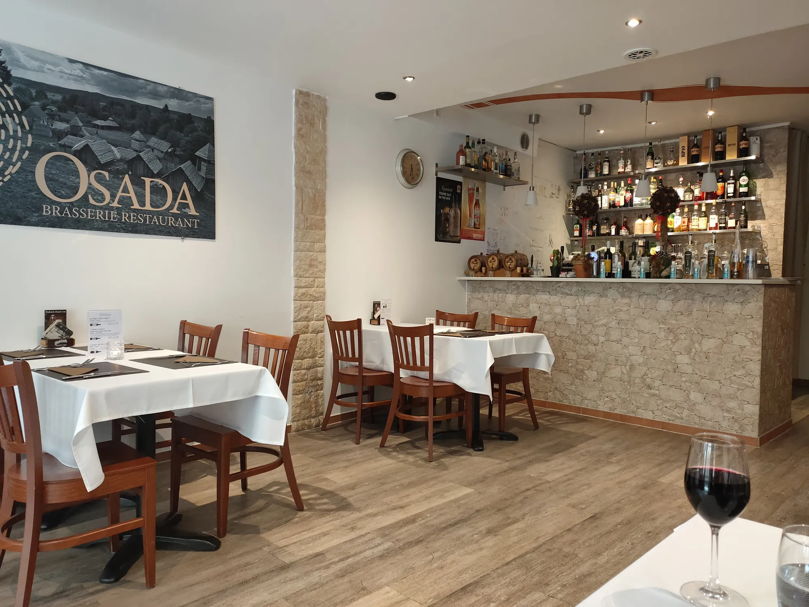
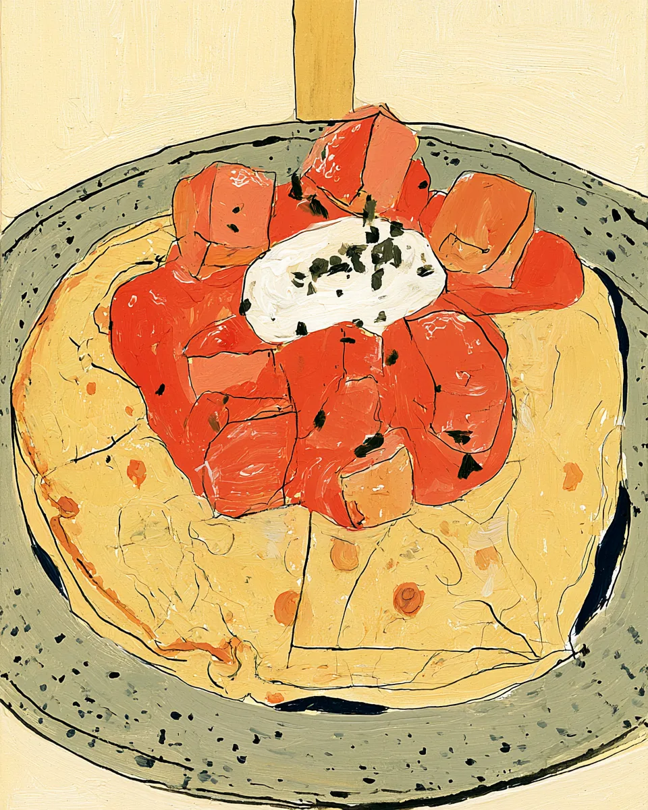
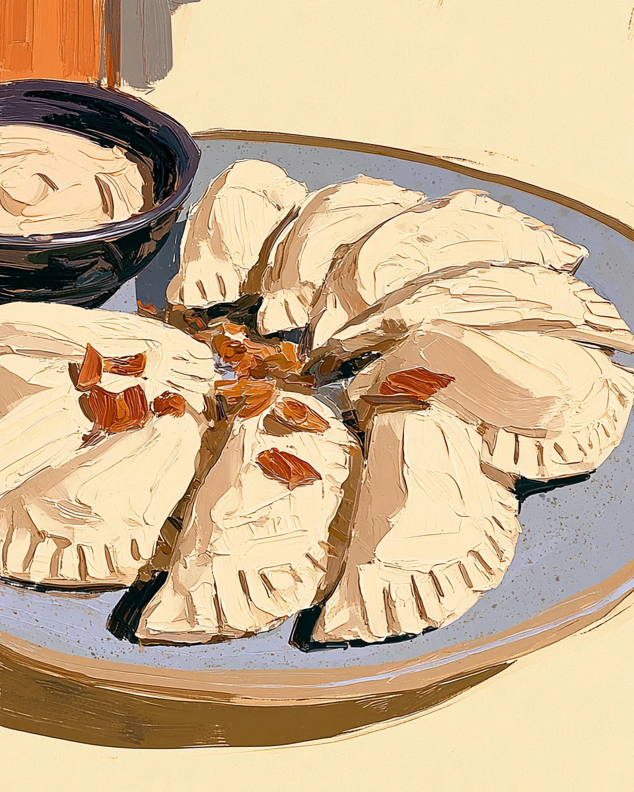
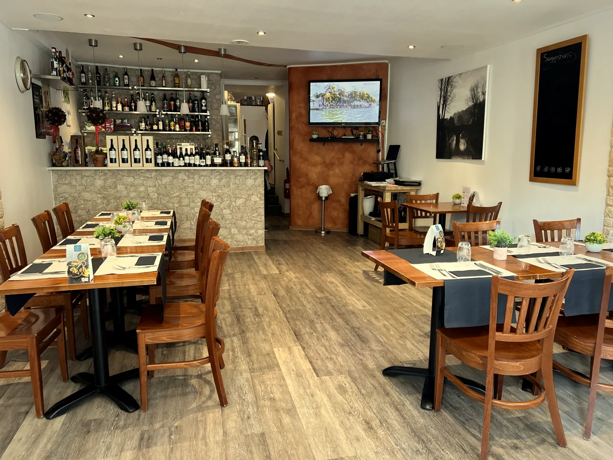
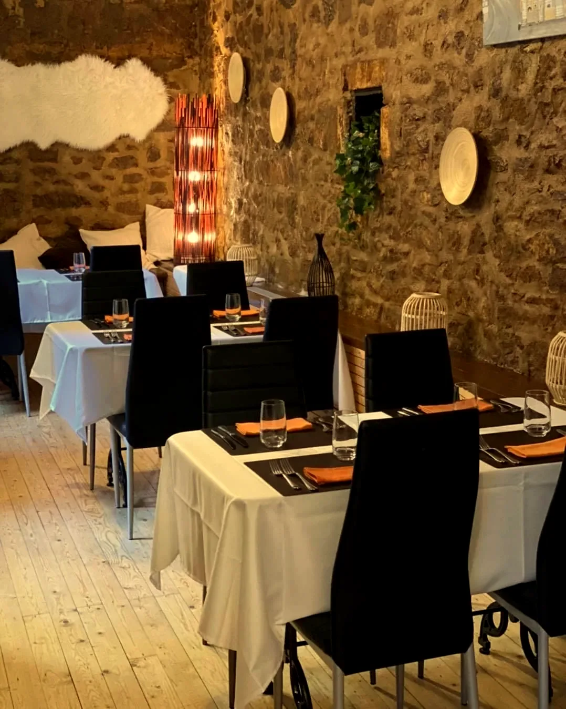
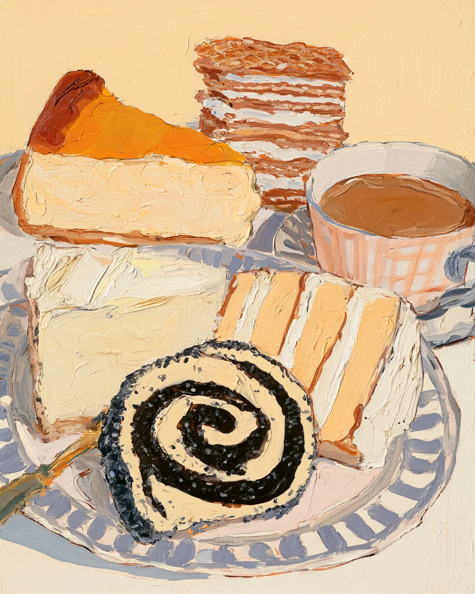

Brasserie et restaurant avec cuisine polonaise.35 rue Laurent Ménager · Pfaffenthal · Fermé le lundi
En polonais, osada veut dire village.
D'abord Nova Osada au Neudorf, en 2011. Ici, au Pfaffenthal, depuis 2020.
Brasserie et restaurant avec cuisine polonaise.35 rue Laurent Ménager · Pfaffenthal · Fermé le lundi
En polonais, osada veut dire village.
D'abord Nova Osada au Neudorf, en 2011. Ici, au Pfaffenthal, depuis 2020.
Żurek w chlebie


Un lieu simple et chaleureux : le bar en bas, deux petites salles à l'étage pour vos fêtes.


« ce petit village polonais au cœur de Luxembourg »
Le Quotidien, 2021, sur l'épicerie Osada

En face, au n° 30 : l'Épicerie Fine Osada, depuis 2017.
L'épicerie, en face →Réservations
26 20 21 14reservations@osada.lu
35 rue Laurent Ménager · Pfaffenthal
Au pied de l'ascenseur panoramique du Pfaffenthal
Fermé le lundi
Horaires et menu du jour sur FacebookMerci beaucoup et à très bientôt